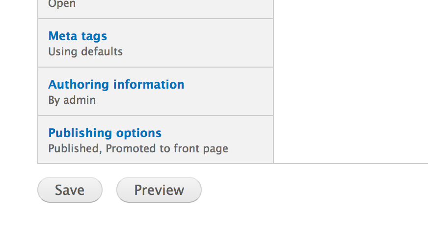
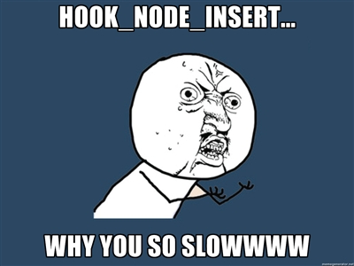

Created by Alex Hripak / @alexh58
Node.js is single process and multi-threaded. Great for integrating other services.
With Apache...
With Node.js...


$count = 0;
$emails = array(
'alex@example.com',
'rob@example.com',
'tom@example.com',
);
foreach($emails as $email) {
if(drupal_mail($module, $key, $email, language_default(), array(), 'alex@left-click.us', TRUE)) {
$count++;
}
}
echo "We sent {$count} email(s).";var mail = require('mail');
var emails = [
'alex@example.com',
'rob@example.com',
'tom@example.com'
];
emails.forEach(function(email, i) {
mail(email, $message, 'alex@left-click.us', function(error) {
if(!error) { count++; }
if(i == emails.length - 1) {
console.log("We sent " + count + " email(s).");
}
});
});
console.log("We've finished the script.");$message = (object) array(
'channel' => 'mymodule',
'data' => array(
'mymessage' => 'The Actual Message',
),
);
nodejs_enqueue_message($message);Drupal.Nodejs.callbacks.mymodule = {
callback: function(message) {
if(message.channel == 'mymodule') {
console.log(message.data.mymessage);
}
}
};You can also drush broadcast-message "Hello" "World"
Slides and demo available at